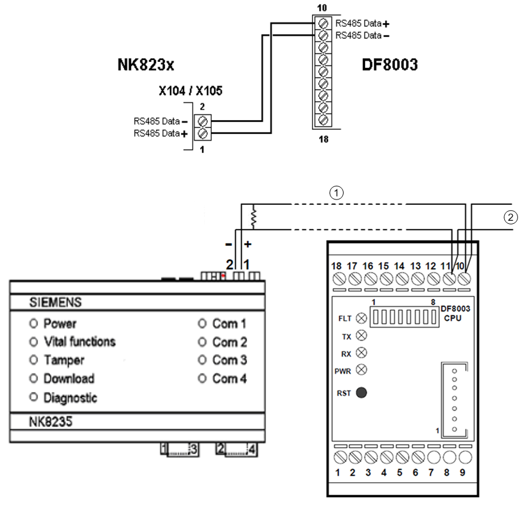
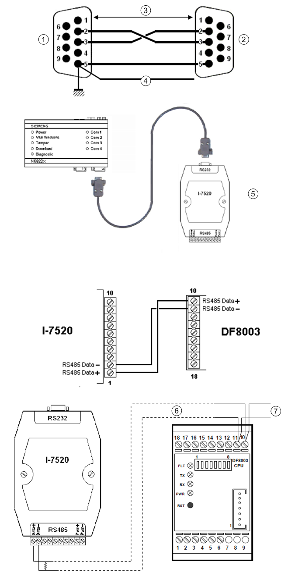

NK823x - DF8003 Connections
The DF8000 system communicates through a 2-wire RS485 bus line (CMX-DL protocol). The NK823x provides for an RS485 port for COM 1 and COM 2. The RS485 bus can be up to 1200 m long and can connect multiple DF8000 units.
COM 3 and COM 4 RS232 port can also be used. An interface converter (not included in the DF8000 supply) is required between the RS232 port and the DF8000 unit. The RS232 line between GW and the converter must be max. 15 m. The recommended model is the I-7520 by ACP DAS (http://www.icpdas.com/products/Remote_IO/i-7000/i-7520.htm).
Each RS485 line can be used for up to 16 single units, or 8 double units, or any combination that does not cause addressing collision: a single unit takes one address from 0 to 15 and a double unit takes two consecutive addresses. See Valid DF8000 I/O Configurations on I2C Bus.
CF9003 units as well as CMX boards can also be connected on a DF8000 line.
RS485 Direct Connection (COM 1 and COM 2)

| Notes |
1 | AWG 22 (0.6 mm2) unshielded cable; max. distance from NK823x to last DF8003 is 1200 m |
2 | To next DF8003 |
RS232 Connection (COM 3 and COM 4) via ICP DAS I-7520 Converter

| Notes |
1 | Plug DE-9 connector |
2 | Plug DE-9 connector |
3 | AWG 20 (0.5 mm2) shielded cable; max. length is 15 m |
4 | Shield |
5 | ICP DAS I-7520 interface converter |
6 | AWG 22 (0.6 mm2) unshielded cable; max. distance from NK823x to last DF8003 is 1200 m |
7 | To next DF8003 |